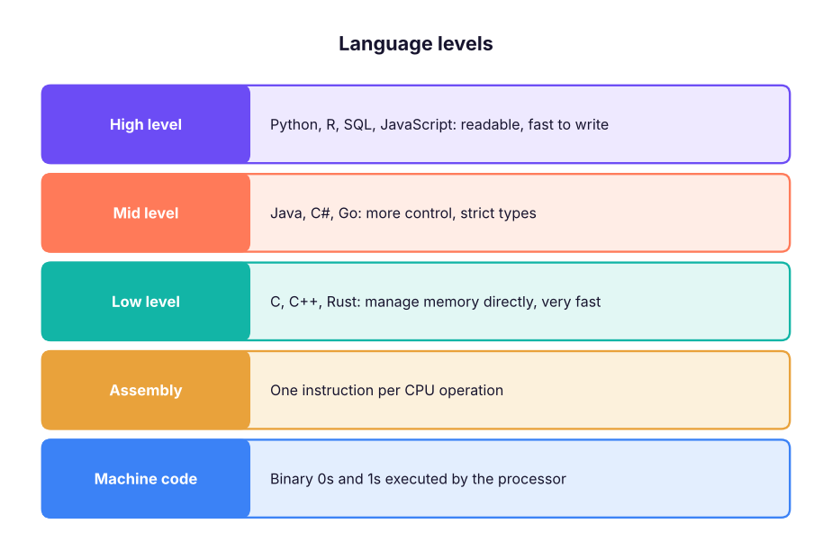
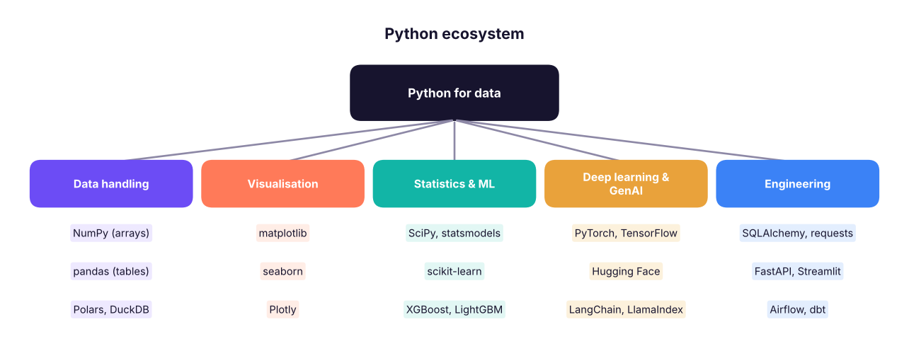
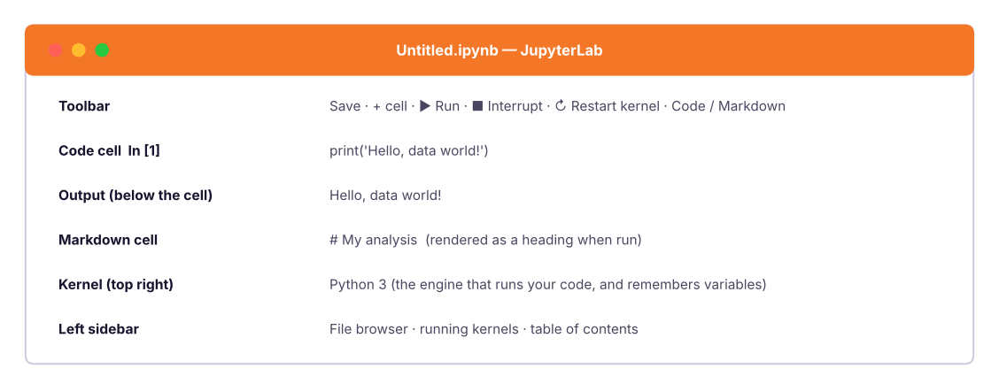

Introduction to Python: Why, Install & Jupyter Notebooks
Learn what programming and Python are, how Python compares with other languages, how code runs (interpreters, compilers, bytecode), the properties of Python, and set up your environment (Anaconda, VS Code, Jupyter, Google Colab). Write and run your first cells, with markdown, magic commands and good notebook habits.
- Explain what a programming language is and why Python is the default language for data work
- Describe the difference between compiled and interpreted languages and how Python runs your code
- Install Python and Jupyter (or use Google Colab) and run code in cells
- Use Markdown cells, keyboard shortcuts, magic commands and restart-and-run-all
- Follow good habits: naming, comments, reproducibility and virtual environments
What is programming?
A program is a set of precise instructions a computer follows. Computers only understand machine code (0s and 1s), so we write instructions in a programming language that humans can read, and a translator turns them into something the machine can run.

Compiled vs interpreted
| Compiled (C, C++, Rust, Go) | Interpreted (Python, JavaScript, R) | |
|---|---|---|
| How it runs | Whole program translated to machine code before running | Translated and executed line by line while running |
| Speed | Usually faster at run time | Slower per operation, much faster to develop |
| Errors | Many caught before running | Some appear only when that line runs |
| Output | A separate executable file | Source file runs under an interpreter |
Python is usually called interpreted. In reality CPython (the standard version) first compiles your code to bytecode (.pyc files) and then a virtual machine executes it. Python code that needs speed calls libraries written in C (NumPy, pandas), so data work is fast anyway.
Why Python for data?

| Property of Python | Meaning |
|---|---|
| Readable | Indentation and English-like keywords; fewer lines than most languages |
| Interpreted, dynamically typed | No compile step; variables take the type of the value they hold |
| High level | Memory is managed for you (garbage collection) |
| Multi-paradigm | Procedural, object-oriented and functional styles |
| Huge ecosystem | 500,000+ packages on PyPI; pandas, scikit-learn, PyTorch lead data and AI |
| Open source and portable | Free; runs on Windows, Mac, Linux, cloud notebooks |
| Great glue | Calls SQL, APIs, C/C++ code, Excel, Spark |
Use Python 3.11, 3.12 or 3.13 (the current stable series in 2026). Python 2 ended in 2020 and must not be used. Check your version with python --version.
Getting set up: three options
| Option | Best for | Steps |
|---|---|---|
| Google Colab (free, in the browser) | Starting today, no installation, GPU for ML | Go to colab.research.google.com → New notebook → sign in with Google |
| Anaconda / Miniconda | Full local data-science setup with packages and environments | Install Anaconda Distribution → open Anaconda Navigator or a terminal → jupyter lab |
| Python + VS Code | Professional workflow, notebooks and scripts in one editor | Install Python from python.org (tick "Add to PATH") → install VS Code → add the Python and Jupyter extensions |
- Install Python 3.12+ from python.org (Windows: tick Add python.exe to PATH).
- Open a terminal and create a virtual environment (an isolated set of packages for one project):
python -m venv .venvthen activate it: Windows.venv\Scripts\activate; Mac/Linuxsource .venv/bin/activate. - Install the course packages:
pip install jupyterlab numpy pandas matplotlib seaborn scikit-learn scipy statsmodels - Start Jupyter:
jupyter lab(opens in your browser).
Jupyter notebooks
A Jupyter notebook (.ipynb) mixes code cells, Markdown cells (text, headings, images) and outputs (tables, charts) in one document. It is the standard tool for exploring data and sharing analysis. The name comes from Julia, Python and R.

The kernel
The kernel is the Python process behind the notebook. Variables you create stay in its memory until you restart it. Cells can be run in any order, which is flexible but dangerous: a notebook can look right while depending on a cell you deleted. Before sharing, always Restart Kernel and Run All to prove the notebook works top to bottom.
Essential shortcuts (Jupyter / Colab)
| Action | Shortcut |
|---|---|
| Run cell, stay | Ctrl + Enter |
| Run cell, go to next | Shift + Enter |
| Insert cell above / below (command mode) | A / B |
| Delete cell (command mode) | D, D |
| Convert to Markdown / Code | M / Y |
| Command mode / edit mode | Esc / Enter |
| Comment / uncomment lines | Ctrl + / |
| Show function help | Shift + Tab (inside the brackets) |
| Autocomplete | Tab |
| Undo cell delete | Z (command mode) |
Your first code
print("Hello, data world!")Hello, data world!
Python is also a calculator:
2 + 3 * 414
(2 + 3) * 4, 10 / 4, 10 // 4, 10 % 4, 2 ** 10(20, 2.5, 2, 2, 1024)
The last expression in a notebook cell is displayed automatically; to show several things use print().
name = "Varun"
learners = 25
print("Welcome to the course,", name)
print(f"This batch has {learners} learners")Welcome to the course, Varun This batch has 25 learners
Comments
# This is a comment: Python ignores everything after the hash
price = 120 # you can also put a comment at the end of a line
"""A triple-quoted string on its own line is often used
as a multi-line comment or docstring"""Write comments to explain why, not what. x = x + 1 # add one is noise; # compensate for the header row is useful.
Errors are normal
Every programmer sees errors daily. Learn to read them from the bottom line up:
print("Total:", total_amount)NameError: name 'total_amount' is not defined
NameError: name 'total_amount' is not defined says exactly what happened: we used a name we never created. Common beginner errors:
| Error | Usual cause |
|---|---|
NameError |
Typo, or the cell that defines the variable has not been run |
SyntaxError |
Missing bracket, quote or colon; wrong indentation |
TypeError |
Using a value of the wrong type ("5" + 3) |
ValueError |
Right type, wrong value (int("abc")) |
IndexError, KeyError |
Asking for a position or key that does not exist |
FileNotFoundError |
Wrong path or the file is not where you think |
Copy the last line of the error, search it, or paste the code and the error into an AI assistant (without secrets) and ask: "What does this error mean and how do I fix it? Explain step by step." Then fix it yourself and re-run: you learn by doing.
Markdown cells
Change a cell to Markdown to write notes next to your code:
# Title
## Section
Some **bold** and *italic* text, a [link](https://example.com), and a list:
- item one
- item two
| Column | Value |
|---|---|
| A | 1 |Good notebooks tell a story: a title, the question, the data, the steps with short explanations, and a conclusion.
Magic commands and useful tools
Jupyter adds special commands beginning with %:
| Command | Purpose |
|---|---|
%timeit expr |
Time a short expression precisely |
%%time |
Time a whole cell |
%pwd, %ls |
Current folder, list files |
%matplotlib inline |
Show charts in the notebook (default now) |
%who |
List variables |
!pip install package |
Run a shell command (install a package) from a cell |
Reproducibility habits
- Folder per project:
data/,notebooks/,src/,README.md. - Virtual environment per project and a
requirements.txt(pip freeze > requirements.txt). - Use relative paths (
data/sales.csv), notC:\Users\you\Desktop\…. - Set random seeds (
np.random.seed(42)) so results repeat. - Restart and Run All before sharing; keep notebooks short and focused.
- Version control: commit to Git; clear outputs of big notebooks.
- Do not commit data with personal information or secrets (API keys); use environment variables.
Ask an assistant: "I'm a beginner. Give me a 7-day practice plan for Python with 20 minutes a day, each day with three small exercises and answers I can check." Use it to practise, not to skip the struggle: type the code, break it on purpose, and read the errors.
Summary
- A program is a set of instructions; Python is a high-level, interpreted, readable language with a huge data ecosystem (NumPy, pandas, scikit-learn, PyTorch).
- CPython compiles source to bytecode and runs it on a virtual machine; speed-critical libraries use C underneath.
- Start with Google Colab or install Anaconda or Python + VS Code; isolate projects with virtual environments.
- A Jupyter notebook mixes code, Markdown and output; the kernel holds state, so Restart and Run All before sharing.
- Read error messages from the bottom; learn the common error types.
- Use clear comments, relative paths, seeds and version control for reproducible work.
1. Which best describes Python?
2. What does the kernel do in a notebook?
3. Why run "Restart kernel and Run All" before sharing a notebook?
4. What does NameError: name 'x' is not defined mean?
5. Which command installs a package from inside a notebook cell?
! runs a shell command.6. What is a virtual environment for?
(1) Open Colab or Jupyter and create a notebook called day1.ipynb. (2) Add a Markdown cell with a title and your goals. (3) In code cells, print your name, compute the area of a rectangle 12 × 7.5, and print the Python version (import sys; print(sys.version)). (4) Cause a NameError on purpose and fix it. (5) Restart and Run All.
Show solution
print("Asha Rao")
length, width = 12, 7.5
print("Area:", length * width) # 90.0
import sys; print(sys.version)
print(undefined_name) # NameError: name 'undefined_name' is not defined
undefined_name = 5; print(undefined_name)Q: Why is Python popular for data science? Readable syntax, a huge ecosystem (NumPy, pandas, scikit-learn, PyTorch), strong community, easy integration with SQL, APIs and cloud, and notebooks for exploration.
Q: Is Python compiled or interpreted? Both: CPython compiles source to bytecode, which the Python virtual machine interprets. It is called interpreted because there is no separate manual compile step.
Q: What is a virtual environment?
An isolated Python installation with its own packages for one project (created with venv or conda), preventing dependency conflicts.
Q: Notebook vs script?
Notebooks are interactive and great for exploration and communication; scripts (.py) are better for production code, testing and automation.
Practise more online
Free, trusted places to test yourself on this topic. Links open the original site in a new tab.